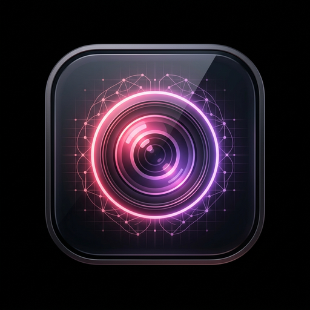
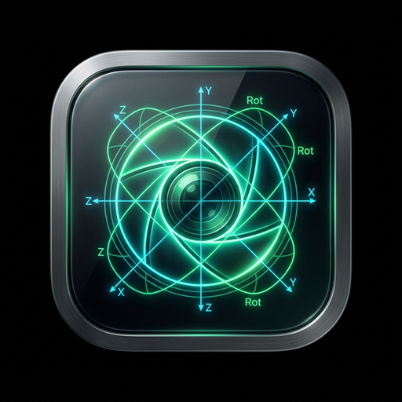
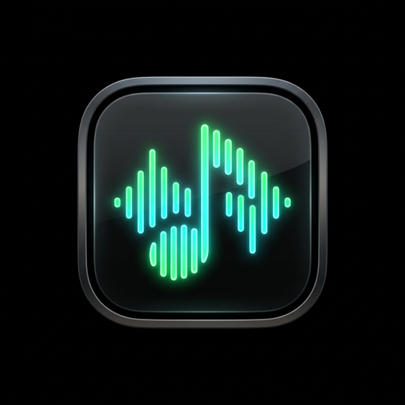

CHUS BZN //
AUDITORÍA & TRAYECTORIA INDUSTRIAL
CHUS BZN cuenta con una trayectoria de más de 33 años liderando la arquitectura de sistemas audiovisuales, sonido broadcast y desarrollo de Inteligencia Artificial para las principales cadenas de televisión, productoras y plataformas de streaming globales.

Ecosistema IA & Prototipado

Studio Pro Suite
v1.0.0 Stable // Electron + ReactEcosistema modular de escritorio para edición avanzada de vídeo, procesamiento masivo de imágenes y consola DAW de masterización.

Cine Station Pro
v1.0.0 Stable // FastAPI + FFmpegPipeline cinematográfico acelerado para inyección dinámica de LUTs profesionales (.cube), colorimetría en tiempo real y transcodificación de alta eficiencia.

Brand Music Curator
v1.0.0 Stable // LLM MultimodalMotor de curación musical asistido por IA para estrategias de identidad sonora, locuciones neuronales y playlists comerciales.
Casos de Estudio Destacados
Despliegue de un flujo de trabajo híbrido integral donde la IA actúa como vector de aceleración en la generación de entornos visuales dinámicos, diseño conceptual de personajes y continuidad de guion optimizado para distribución masiva.
Flujo forense de audio para entrenamiento y clonación neural legítima de voz a partir de cintas analógicas y masters históricos. Cumplimiento estricto del EU AI Act y blindaje con AISGE.
Cualificaciones FPCAT (14 Unidades de Competencia)
- UC1408_3: Definición y planificación de proyectos de sonido complejos para audiovisual y directo.
- UC1409_3: Supervisión de instalación y mantenimiento de sistemas de sonido profesionales.
- UC1410_3: Ajuste de equipos y captación de sonido para grabación o emisión broadcast.
- UC1411_3: Postproducción de proyectos de sonido (mezcla, diseño sonoro y masterización EBU R128).
- UC1412_3: Verificación y ajuste de sistemas de sonorización en recintos complejos.
- UC1413_3: Control de sonido en artes escénicas y eventos multitudinarios en directo.
- UC1396_2: Programación y montaje de sesiones de animación musical y visual en vivo.
- UC1397_2: Mezcla y animación musical en directo con iluminación y vídeo.
- UC1398_2: Animación visual en vivo integrando elementos escénicos.
- UC1402_2: Montaje, desmontaje y mantenimiento de equipamiento AV profesional.
- UC1403_2: Mezcla directa y grabación en producciones de sonido en vivo.
- UC1404_2: Microfonía y posicionamiento espectral en sonido.
- UC0928_2: Digitalización y tratamiento digital de imágenes.
- UC1401_1: Montaje de productos fotográficos profesionales.
Trayectoria Industrial de 33 Años
Productor Audiovisual Senior & IA Specialist
Actuara12 (Laboratorio & Estudio Propietario)Liderazgo técnico en eventos corporativos, producciones cinematográficas y desarrollo de soluciones basadas en Inteligencia Artificial.
Especialista Tecnológico
Apple ComputersArquitectura de soluciones y consultoría tecnológica de alto nivel para el sector creativo y corporativo de Barcelona.
Diseñador de Sonido & Montador Musical
Visiona TV / TV3 / TVE1Diseño sonoro para "Dinàmiks" (TV3) y montaje musical para formatos de entretenimiento de máxima audiencia nacional como "Juego de Niños" (TVE1) con Javier Sardà.
Técnico de Doblaje Senior
Digitsound S.L.Doblaje y postproducción de largometrajes cinematográficos (trilogía El Señor de los Anillos) y series de televisión (American Horror Story, CSI) para Netflix, HBO y Sony Pictures.
Técnico Audiovisual & Montador Musical Titular
Gestmusic (Endemol Shine Iberia)Control de sonido directo y efectos durante las 8 temporadas consecutivas de "Crónicas Marcianas", el programa líder histórico de televisión en España.
Técnico de Doblaje (Inicios de Oficio)
Tecni.3 (Badalona)Operación con tecnología analógica industrial: sistemas de 35mm, grabadores multipista de cinta abierta y código de tiempo analógico.
Compliance & Gestión de Derechos
Protección de derechos de autor y composiciones musicales.
Protección de interpretaciones y soberanía biométrica vocal.
Asociación de DJs y Productores de Música Electrónica.
Gestión de propiedad intelectual de artistas ejecutantes.